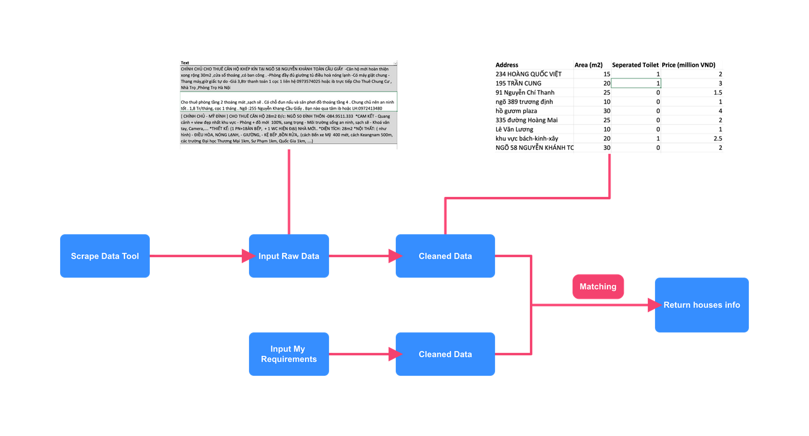

How I use scrapy to collect the data I need
The Good, The Bad and The Data
About 4 years ago, I encountered a huge struggle looking for a suitable room for rent. Information about renting house/room is vast and it’s really hard to filter useful data.
I didn’t want to hire an agent for that and didn’t have time to search every websites for rent.
That’s when I have the idea of collecting data automatically from every kind of websites.
But it took quite a long time to study programming well enough to make some tools like that. Few years later, now I’m able to make my wishes some true with the automation tools. I called it Stacy (in Gwen Stacy - A spider woman from Marvel)
There are normally 4 steps in defining and solving a data science problem:
- Formulating a question or problem
- Acquiring and cleaning data
- Conducting exploratory data analysis
- Using prediction and inference to draw conclusions
For each step we need to answer some questions, so we go through these one by one.
Define the question/problem we need to solve
What do we want and what are our metrics of success or how to evaluate the result?
In my case, I want:
- To find all houses that are available at the time and satisfy my needs.
Ex: I want a room with area around 20\(m^2\), has windows, able to cook, inside Dong Da District and the price is around 2 million VND per month.
So to make sure the houses are available at the time and satisfy my needs, I need the tool to:
- Update in real-time or at least every 30 minutes which houses are available (available at the time)
- Match all the criteria (satisfy my needs)
I expect the data flow as below:

Acquiring data
Something I need to prepare:
Data Sources: facebook posts/groups, some websites as: nha.chotot.com, phongtro123.com, mogi.vn, batdongsan.com.vn
Framework/Tools: For scrape data using Python, I will use Scrapy and Splash for simulate a browser in cases some website requires javascript. Row data will be stored in mongodb with ORM will be Pymongo; I also want to schedule the crawler thus I will use scrapy-do for scheduly running background tasks.
Let’s code our “spider”.
After creating folder for our project, setup virtualenv for python3, pip install scrapy to install scrapy, we run startproject command to create new project:
$ scrapy startproject stacyThe crawler includes few main parts:
- The spider itself: a class inherit
scrapy.Spiderclass that create list of Requests that we send to get the webpage we need. EachRequesthas a callback that is the function which handle the response of the request. - In case we need authentication, we should care about
middleware, I usually add cookies to middleware, so every requests the crawler makes will contains authentication information - Scrapy stores the data that retrive from
responseinItems. My item includes several fields but the most important ispost_contentthat contains the raw text/content about housing. - Item pipeline is where we save the Item to database.
- The parsing part is usually quite boring, you can use inspector in browser to look up for the
xpathorcssof the element in DOM, then parsing is simple thing
I will show some interesting parts in my code here.
Using splash with Lua script to login to a page
Splash is a headless browser (a browser without GUI) that is integrated greatly with scrapy, the fun thing is Splash using Lua, so I need to learn a little about Lua to be able to write the automatically login script.
function main(splash, args)
-- Define a function that focus on an input
function focus(sel)
splash:select(sel):focus()
end
-- Go to the login site
assert(splash:go{
splash.args.url,
headers=splash.args.headers,
http_method=splash.args.http_method,
body=splash.args.body,
})
-- "Click" to email input
focus('input[name=email]')
-- "Type" your email
splash:send_text("cuongtuanpham159@gmail.com")
-- "Click" to password input
focus('input[name=pass]')
-- "Type" your password
splash:send_text("xtcc8JWyq2q/lxGX+4D9Sx92V80WttPhAJSBues")
-- Wait a little bit to make sure inputs is filled
assert(splash:wait(0.5))
-- "Click" to Login button
splash:select('input[name=login]'):mouse_click()
-- Done, wait the welcome window to display
assert(splash:wait(2))
return {
url = splash:url(),
cookies = splash:get_cookies(), -- Get the cookies to store in database later
html = splash:html(),
}
endThe code above is the most basic example when we want to login into some sites. Because in many cases, the website will require something like capcha, ‘I’m not robot’ thing and so on that make the login process more complicated. But normally I will successfully login to the website I want and get cookies that allows me to easily make requests later without having to login again.
Remove all emoji or non-alphabet, non-vietnamese characters
After we retrieve post_content from response html, we need briefly “clean” that data.
Example I have retrieved a text:
🏠🏠🏠 Cho thuê phòng tầng 2 thoáng mát ,sạch sẽ . Có chỗ đun nấu và sân phơi đồ thoáng tầng 4 . Chung chủ nên an ninh tốt . 1,8 Tr/tháng, cọc 1 tháng . Ngõ :255 Nguyễn Khang-Cầu Giấy . Bạn nào qua tâm ib hoặc LH:0972413480
There are some things I noticed:
- Emoji and special characters in the text
- Uppercase and lowercase characters
- Extra whitespace
So how to normalize the text above?
Using regex seems to be the fastest way to remove Emoji and unwanted characters.
The idea is replace all non-alphabet/vietnamese with empty string re.sub(r"[^\w\s]+", "", text) then replace double whitespace \s\s+ with single white space.
def clean_text(text):
return re.sub(r"\s\s+", " ", re.sub(r"[^\w\s]+", "", text))When run the code above with the text above, result will be:
"Cho thuê phòng tầng 2 thoáng mát sạch sẽ Có chỗ đun nấu và sân phơi đồ
thoáng tầng 4 Chung chủ nên an ninh tốt 18 Trtháng cọc 1 tháng Ngõ 255
Nguyễn KhangCầu Giấy Bạn nào qua tâm ib hoặc LH0972413480"Look pretty … wrong. It’s will be hard for us to detect the price 18 Trtháng that actually is 1,8 Tr/tháng.
Because there are few punctuations that should be remained in the text like ,, ., /, therefore we need to define which ones ought to be kept.
The list of unicode characters could be found here. And thanks for that, I can define which punctuations I should remain in the text and rewrite my code:
def clean_text(text):
return re.sub(
r"\s\s+",
" ",
re.sub(
r"[^\u002C-\u002F\u0028-\u0029\u003A-\u003F\w\s]+", "", text
)
)And the result is pretty good now:
"Cho thuê phòng tầng 2 thoáng mát ,sạch sẽ .
Có chỗ đun nấu và sân phơi đồ thoáng tầng 4 .
Chung chủ nên an ninh tốt . 1,8 Tr/tháng, cọc 1 tháng .
Ngõ :255 Nguyễn Khang-Cầu Giấy . Bạn nào qua tâm ib hoặc LH:0972413480"We can do more to remove redundant semicolons but I feel ok with this text and ready to save it to the data base.
Updating…